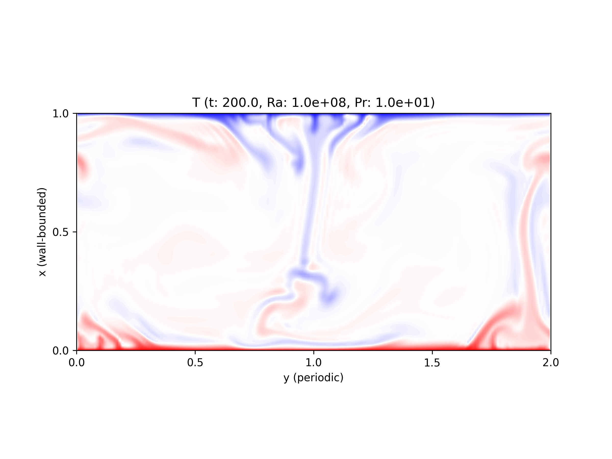

Case 1 - Run default case¶
Run exec.sh.
Note
This section is updated automatically.
OS : "Ubuntu 20.04.4 LTS"
Date : Sun Jul 24 02:34:01 UTC 2022
Hash : ab34be394f0dae6e13d260cb0510f084a31fef36
Configuration¶
1#!/bin/bash
2
3## directory name containing flow fields to restart
4# export dirname_restart="output/save/stepxxxxxxxxxx"
5
6## flags
7# couple temperature field or not
8export with_temperature=true
9# thermal forcing is added to x-momentum
10export with_thermal_forcing=true
11
12## durations
13# maximum duration (in free-fall time)
14export timemax=2.0e+2
15# maximum duration (in wall time [s])
16export wtimemax=6.0e+2
17# logging rate (in free-fall time)
18export log_rate=2.0e-1
19# logging after (in free-fall time)
20export log_after=0.0e+0
21# save rate (in free-fall time)
22export save_rate=2.0e+1
23# save after (in free-fall time)
24export save_after=0.0e+0
25# statistics collection rate (in free-fall time)
26export stat_rate=1.0e-1
27# statistics collection after (in free-fall time)
28export stat_after=1.0e+2
29
30## domain
31# domain lengths
32export ly=2.0e+0
33# number of grids
34export itot=128
35export jtot=192
36# grid stretching in x (i) direction (clipped-Chebyshev)
37# number of grids which are clipped
38export stretch=3
39
40## physical parameters
41export Ra=1.0e+8
42export Pr=1.0e+1
43
44export OMPI_MCA_btl_vader_single_copy_mechanism=none
45
46mpirun -n 1 --oversubscribe ./a.out
Visualisations¶
Temperature field at the end of the run is visualised here.
{kind=link}
Incompressibility constraint¶
Thanks to the direct Poisson solver, local divergence of the velocity field should be sufficiently small, i.e.,
where \(\epsilon\) and \(\Delta\) are machine epsilon \(\sim 10^{-16}\) and the representative grid size, respectively.
Nusselt numbers¶
\(Nu\) computed by different formula are shown, (red) heat fluxes on the walls, (blue) energy injection, (green) kinetic energy dissipation, and (magenta) thermal energy dissipation, respectively.
Black-dashed line shows a reference value by van der Poel et al., J. Fluid Mech. (736), 2013 with the same \(Ra\) and \(Pr\) but with a different domain geometry (box).
See also
Nusselt number relations for the definition of each \(Nu\), and src/logging.c for how they are computed.
Statistics¶
Variances of (red) \(\ux\), (blue) \(\uy\), and (green) \(T\) are plotted here.